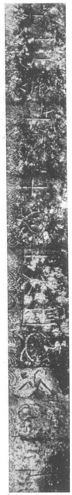
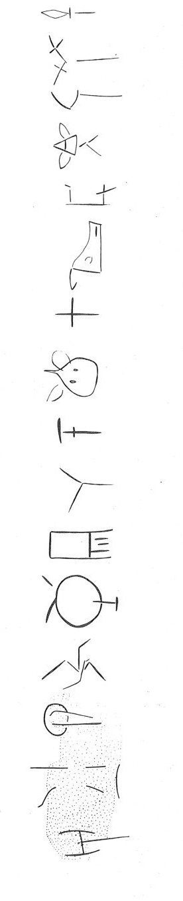

-
KO(?)Zf2
Names
KO(?)Zf2, KO(?)Zf2
Support
Metal object
Location
Kophinas
Findspot
Unavailable


Scribe
Unavailable
Context
Unavailable
Dimensions
Catalogue
Readings
1 1 0 A doubtful
1 1 0 RA doubtful
1 1 0 KO doubtful
2 1 0 KU certain
2 1 0 ZU certain
3 1 0 WA certain
3 1 0 SA certain
4 1 0 TO certain
4 1 0 MA certain
5 1 0 RO certain
5 1 0 AU certain
6 1 0 TA certain
6 1 0 DE certain
7 1 0 PO certain
7 1 0 NI certain
8 1 0 ZA certain
𐘇𐘴𐘺
𐙂𐙀
𐘮𐘞
𐘄𐙁
𐘁𐙄
𐘳𐘦
𐘊𐘝
𐘍
ARAKO
KUZU
WASA
TOMA
ROAU
TADE
PONI
ZA
𐘇𐘴𐘺𐙂𐙀𐘮𐘞𐘄𐙁𐘁𐙄𐘳𐘦𐘊𐘝𐘍
ARAKOKUZUWASATOMAROAUTADEPONIZA
KO (?) Zf 2
(Khania Mus. 1385 [Mitsotakis collection]) (GORILA IV: 158-159), bronze
mesomphalos bowl
A
-
RA
-
KO
-KU-ZU-WA-SA-TO-MA-RO-AU-TA-DE-PO-NI-ZA
KYTHERA
Commentary © John Younger
References